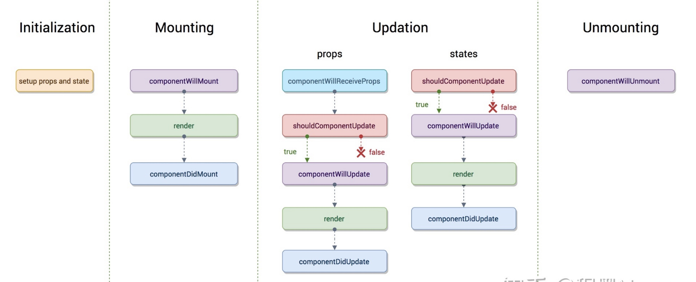
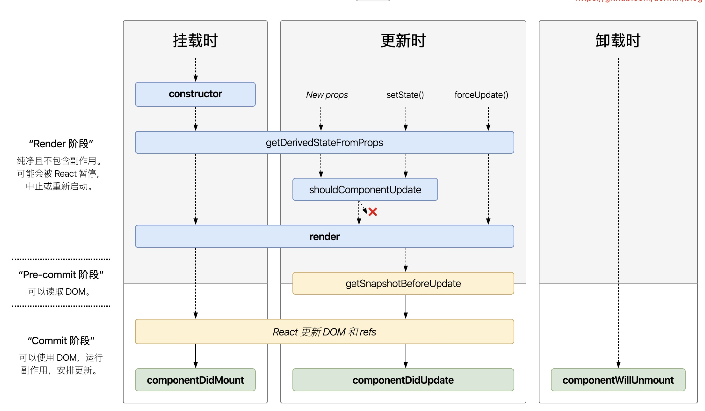

Marion 的 react 实战课程 > 第二单元 React 基础与关联知识 > 生命周期与组件优化
什么是生命周期
这个问题已经问得比较滥了, 其实生命周期（Life Cycle）的概念应用很广泛, 特别是在政治、经济、环境、技术、社会等诸多领域经常出现, 其基本涵义可以通俗地理解为“从摇篮到坟墓”（Cradle-to-Grave）的整个过程。而对于 React 来讲, 应该称之为组件的生命周期, 这样可以从字面理解, 就是一个组件从加载到更新再到卸载的整个流程，而我们平时所说的生命周期其实就是React 向外暴露的整个流程中用于获取或修改状态的接口函数。
react 几个比较关键的时间节点(简单了解即可)
2017 年 9 月, 16.0.0 版本更新, 增加了 Error Boundaries（错误边界）用于捕获子组件中的错误并显示错误 UI 而不是让整个组件崩溃
2018 年 3 月, 16.3 版本更新, 对生命周期函数做出了比较大的调整, 出现了两个新的生命周期函数 getDerivedStateFromProps 与 getSnapshotBeforeUpdate, 并声明将逐渐废弃 componentWillMount、componentWillReceiveProps、componentWillUpdate
2019 年 2 月, hooks 出现, 部分比较前卫的小公司新开项目, 都直接上了 hooks, 但大公司因为旧的项目太多, 所以还在类组件上折腾着, 只有少数比较前卫的团队开始使用 hooks;
react 更新日志, 感兴趣的同学可以课后去看一看, 了解一下就行, 不用花太多时间, 主要是你们工作以后, 需要关注这块以了解最近的更新有了哪些新特性或者有哪些特性被宣布被废弃, 这些都是很重要的, 关系着你在写项目时可以使用哪些方法不能使用哪些方法。比如生命周期, 现在还有很多公司因为早期的项目中 16.4 以前的代码太多, 导致无法使用最新的 react 版本。
早期(16.3 以前)的生命周期
参考下面的图: 早期的生命周期函数比较多, 分以下 4 个阶段: 创建阶段、实例化阶段、更新阶段、卸载阶段

创建阶段
getDefaultProps(16.4 后废弃)
这个阶段只会触发一个 getDefaultProps 方法, 该方法返回一个对象并缓存起来。然后与父组件指定的 props 对象合并, 最后赋值给 this.props 作为该组件的默认属性。
实例化阶段
该阶段主要发生在实例化组件类的时候, 也就是该组件类被调用的时候触发。这个阶段会触发一系列的流程, 按执行顺序如下:
getInitialState(16.4 后废弃): 初始化组件的 state 的值。其返回值会赋值给组件的 this.state 属性。
componentWillMount(16.4 后废弃): 这里可以根据业务逻辑来对 this.state 进行一些相应的操作。
render: 根据 this.state 的值, 生成页面需要的虚拟 DOM 结构, 并返回该结构。
componentDidMount: 在 render 完成后触发, 这个时候已经可以通过 ReactDOM.findDOMNode(this) 来获取当前组件的节点, 然后就可以像 Web 开发中那样操作里面的 DOM 元素了。
更新阶段
这主要发生在用户操作之后或者父组件有更新的时候, 此时会根据用户的操作行为进行相应的页面结构的调整。这个阶段也会触发一系列的流程, 按执行顺序如下:
componentWillReceiveProps(16.4 后废弃): 当组件接收到新的 props 时, 会触发这个函数。在这个函数中, 通常可以调用 this.setState 方法来完成对 this.state 的修改。
shouldComponentUpdate: 该方法用来拦截新的 props 或 state, 然后根据事先设定好的判断逻辑, 做出最后要不要更新组件的决定。
componentWillUpdate(16.4 后废弃): 当上面的方法拦截返回 true 的时候, 就可以在该方法中做一些更新之前的操作。
render: 根据一系列的 diff 算法, 生成需要更新的虚拟 DOM 数据。（在 render 中只允许进行数据和模板的组合, 不允许对 state 进行修改, 一是维护代码可读性, 最关键的是避免因为修改属性而造成的死循环）
componentDidUpdate: 该方法在组件的更新已经同步到真实 DOM 后触发, 我们常在该方法中做一些 DOM 操作。
卸载阶段
componentWillUnmount
当组件需要从 DOM 中移除的时候, 我们通常会做一些取消事件绑定、移除虚拟 DOM 中对应的组件数据结构、销毁一些无效的定时器等工作。这些事情都可以在这个方法中处理
注意: 如果你是 3~4 年的工作经验的话, 也就是说到你毕业, 应该是 2021 年年初, 往前回溯 4 年, 应该是 2017 年左右, 那么相对来说早期的生命周期不需要记太多, 面试官如果问起, 可以说很长时间没有用到了, 基本忘记了, 因为你使用的时间太短, 记不住是允许的。如果你的简历是在 2016 年就开始工作的话, 需要记下来一部分, 至少要把后面标红的这些记下来。
但是接下来的 16.3 以后的生命周期需要记一下, 因为时间点比较近, 对比国内的生产环境, 应该还有很多公司在用着。哪怕是你说你 hooks 出现以后就直接没再使用生命周期也不可能全忘记的。
当前的生命周期
React 16.3 版本中对生命周期函数做出了比较大的调整, 将创建阶段与实例化阶段进行了合并，调整新的生命周期为三个阶段: 挂载阶段、更新阶段以及卸载阶段。同时宣布即将弃用 componentWillMount、componentWillReceiveProps、componentWillUpdate 这三个生命周期，取而代之的是两个新的生命周期函数 getDerivedStateFromProps 与 getSnapshotBeforeUpdate。
挂载阶段:
constructor: React 在这里完成对数据的初始化，它接受两个参数：props 和 context，当想在函数内部使用这两个参数时，需使用 super()传入这两个参数
static getDerivedStateFromProps: 获取派生状态，它在组件渲染前调用并返回一个对象来更新 state
render: React 在这里将你写入的 JSX 生成一个虚拟 Dom 树，然后渲染到页面中；
componentDidMount: 组件第一次渲染完成，这个时候 DOM 节点已经生成，我们可以在这里以 refs 的方式获取元素或者调用 ajax 请求，返回数据 setState 后组件会重新渲染
更新阶段:
static getDerivedStateFromProps: 它提供了两个参数: nextProps 与 prevState;旧版本的 componentWillReceiveProps 方法需要在这里判断前后两个 props 是否相同，如果不同再将新的 props 更新到相应的 state 上去，这样就破坏了 state 数据的单一数据源特性，导致组件状态变得不可控；在这个方法中，我们将不再有权访问 this.props,而只能通过比较 nextProps 与 prevState 的值来判断是否需要更新当前的 state。
shouldComponentUpdate: 它的功能主要是用于优化，它提供了两个参数: nextProps 与 nextState; 在正常的 react 渲染流程中，当我们的父组件 state 发生变化时，无论是否影响到了当前组件的 props 都会造成当前组件的重新渲染。shouldComponentUpdate 可以让我们避免这种情况。同时，react 也给我们推荐了一种避免手动编写 shouldComponentUpdate 函数的方法就是使用 PureComponent
render: 这里就是上面挂载阶段的 Render 方法，只不过在每一次组件更新时，React 会在这里通过其 diff 算法比较更新前后的新旧 DOM 树，比较以后，找到最小的有差异的 DOM 节点，并重新渲染；
getSnapshotBeforeUpdate: 生命周期走到这里，代表着整个 DOM 已经生成完成但还没有渲染到页面中。我们可以在这里读取当前某个 DOM 元素的状态，并在 componentDidUpdate 中进行相应的处理。
componentDidUpdate: 与挂载阶段的 componentDidMount 几乎一致，唯一的区别是 componentDidMount 只会在组件首次渲染时被触发，而页面每次被更新后都会触发 componentDidUpdate
卸载阶段:
- componentWillUnmount: 这个与旧版完全一致，组件被卸载前触发，我们要在这将所有的事件监听、计时器等统统干掉
错误处理:
错误处理也是生命周期的一部分，但因为一线开发者很少用到它，所以大多数的技术贴子里是没有包含这个阶段的。
static getDerivedStateFromError 当子组件抛出错误时调用，我们可以利用这个生命周期去做一些 UI 的降级处理，比如错误边界
componentDidCatch 与 getDerivedStateFromError 类似，这个生命周期函数也是在子组件抛出错误时调用，它有个好处是可以直接修改 state 里值的内容，但 React 并不推荐这样做。
流程参考下图：

从流程图中我们可以看到, 新版的生命周期引入了两个全新的生命周期函数: getDerivedStateFromProps, getSnapShotBeforeUpdate; 这两个生命周期都属于特殊的生命周期，可能我们很少有机会能用到，简单给大家介绍一下，有个印象就行。
static getDerivedStateFromProps 获取派生状态
这个生命周期主要用于取代早期的 componentWillMount、componentWillUpdate 和 componentWillReceiveProps, 也就是说无论是挂载阶段还是更新阶段全部都会调用。它适用于一种比较罕见的场景：当前组件中有 state 依赖于 props 中的内容进行初始化操作。
react 官方要求是谨慎使用这个生命周期，因为它会导致代码冗余，并且使组件难以维护。我们现在先简单了解一下它的使用方式。
首先这个生命周期会在调用 render 方法之前调用，并且在初始挂载及后续更新时都会被调用。它会返回一个对象，这个对象会与组件当前的 state 进行合并。
// 早期的props发生变化会调用这个方法来传入最新的props
componentWillReceiveProps(nextProps) {
// 如果状态发生变化调用setState改变状态
if (nextProps.isLogin !== this.props.isLogin) {
this.setState({
isLogin: nextProps.isLogin,
});
}
if (nextProps.isLogin) {
this.handleClose();
}
}
// 16.3以后调用这个方法。
// 需要注意的是这是一个静态方法，使用它时必须以static标识它
// 另一个需要注意的是它必须要有返回值，如果不需要更新state就必须返回null。
// 它会传入当前的props与最新的props，我们对它的内容进行比较后决定是否需要返回一个state对象来与组件当前的state进行合并
static getDerivedStateFromProps(nextProps, prevState) {
// 判断最传入的props中的值是否与现有的state中的值相同，
// 如果不同则返回一个新的state对象来覆盖当前state里的值
if (nextProps.isLogin !== prevState.isLogin) {
return {
isLogin: nextProps.isLogin,
};
}
return null;
}
从上面的代码可以看出，可能对于不是非常复杂的业务，我们完全可以在 render 生命周期中对 state 进行计算；而对于那种比较复杂的业务我们可能需要使用其它的方法来进行计算以避免当前组件代码过多不方便阅读。当然，这个生命周期也并不是完全无用，后续在学习 redux 时，我们还会有课程讲到这个生命周期，到时再详细说吧。
getSnapshotBeforeUpdate 获取更新快照
这个生命周期函数被放置在了 render 之后, 可以读取但无法使用 DOM 的时候。它使得我们的组件可以在可能更改之前就能从 DOM 中获得一些信息, 比如滚动位置。这个生命周期函数里的任何值都将会作为参数传递给 componentDidUpdate。
来自官网的 getSnapshotBeforeUpdate 的例子
class ScrollingList extends React.Component {
constructor(props) {
super(props);
this.listRef = React.createRef();
}
getSnapshotBeforeUpdate(prevProps, prevState) {
// 我们是否要添加新的 items 到列表
// 捕捉滚动位置, 以便我们可以稍后调整滚动
if (prevProps.list.length < this.props.list.length) {
const list = this.listRef.current;
return list.scrollHeight - list.scrollTop;
}
return null;
}
componentDidUpdate(prevProps, prevState, snapshot) {
// 如果我们有snapshot值, 我们已经添加了 新的items
// 调整滚动以至于这些新的items 不会将旧items推出视图
// (这边的snapshot是 getSnapshotBeforeUpdate方法的返回值)
if (snapshot !== null) {
const list = this.listRef.current;
list.scrollTop = list.scrollHeight - snapshot;
}
}
render() {
return <div ref={this.listRef}>{/* ...contents... */}</div>;
}
}
从上面的例子中可以看出，它的作用在于当我们更新 Dom 后对页面的一些元素进行计算，然后调整对应的一些元素的位置，比较常见的使用场景比如：长列表的数据更新后保持滚动条在原有位置。
getSnapshotBeforeUpdate 实例：超大型数据列表展示
static getDerivedStateFromError 获取派生的错误状态
class ErrorBoundary extends React.Component {
constructor(props) {
super(props);
this.state = { hasError: false };
}
static getDerivedStateFromError(error) {
// 更新 state 使下一次渲染可以显降级 UI
return { hasError: true };
}
render() {
if (this.state.hasError) {
// 你可以渲染任何自定义的降级 UI
return <h1>Something went wrong.</h1>;
}
return this.props.children;
}
}